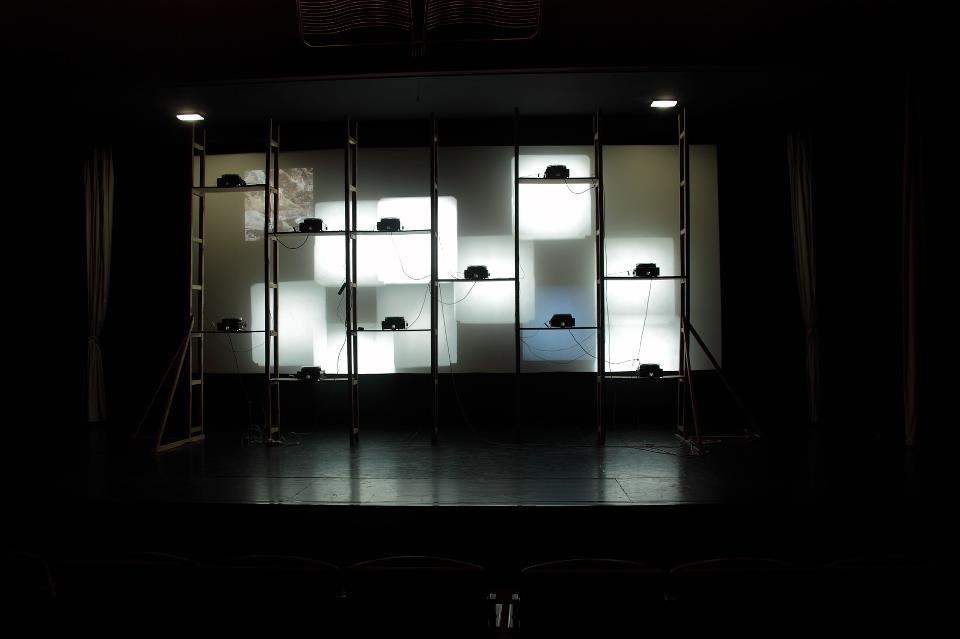
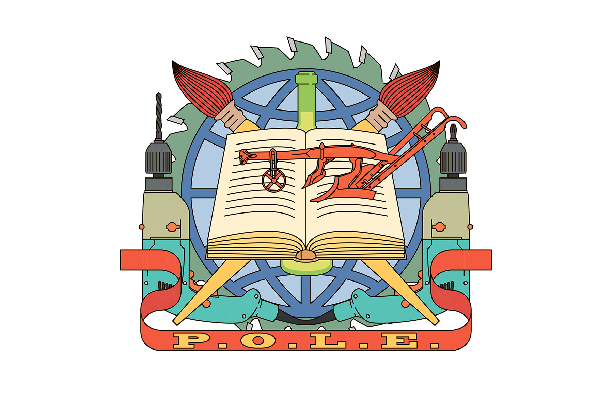

Мастацкія практыкі з палітычнымі мэтамі. Інтэрвію з групай P.O.L.E.
Аляксей Талстоў
22/05/2014
Успрыманьне мастацтва – даволі асабістая справа. Суб'ектыўныя меркаваньні, напэўна, – адзіны слушны крытэр ацэнкі твораў. Сучаснае мастацтва даволі разнастайнае і паводле формы, і паводле зьместу, многім яно падасца спрэчным, многія за такое гатовыя нават надаваць поўхаў. У полі арт-практык багата сэнсаў і сродкаў, любыя абмежаваньні ўспрымаюцца як выклік, і часам бывае сапраўды цяжка знайсьці ў творах хоць нейкія зьнешнія прыкметы мастацкасьці. Значная ўцягнутасьць аўтараў у сацыяльныя працэсы і палітыку зьмяняе і саму мову, і сродкі, якімі аўтары карыстаюцца. Мэтады таксама могуць быць самымі рознымі: ад дакумэнтацыі да прамога дзеяньня. Чэская група P.O.L.E. – такі прыклад неадназначнага творчага калектыву, які, свабодна валодаючы інструмэнтаром сучасных практык, пасьлядоўна працуе над дасягненьнем сваіх палітычных мэтаў. У гэтым інтэрвію творцы расказваюць пра сваю дзейнасьць, акрэсьліваюць інтарэсы і спэцыфіку працы, а таксама закранаюць сытуацыю ў чэскай мастацкай супольнасьці апошніх двух дзесяцігодзьдзяў.
Для пачатку, можа, трохі агульнай інфармацыі пра вашу групу. Як вы пачыналі? Што робіце? Якія мэты ставіце?
Мы працавалі ў розных субгрупах з рознымі праектамі, пасьля вырашылі стварыць нешта сваё. Фармальна мы НДА, але насамрэч фармальна. Мы б не назвалі сябе клясычнай арт-групай, бо ад самага пачатку хацелі быць больш адкрытымі. Поле нашай дзейнасьці нашмат шырэйшае за мастацтва. Мы адразу імкнуліся супрацоўнічаць з тэарэтыкамі, быць улучанымі ў дзейнасьць, якую нельга назваць выключна мастацкай. P.O.L.E. – гэта ў нейкай ступені абрэвіятура, з чэскай перакладаецца як «месца для арганізаванай энтрапіі». Гучыць гэта, вядома, як нонсэнс, але тым ня менш.
Калі мы дачыняемся зь людзьмі, якія не размаўляюць па-чэску, яны зазвычай думаюць, што гэта ангельская назва – «полюс» ці «шост». Зрэшты, усе гэтыя інтэрпрэтацыі для нас прымальныя. Адна справа, калі мы пачалі супрацоўнічаць у такім складзе, але зусім іншая – калі пачалі выкарыстоўваць назву. Самым важным зь першых мерапрыемстваў, у якім мы выступілі ў якасьці групы, была выстава, прысьвечаная розным формам студэнцкага актывізму «Магчымасьці студэнцкага жыцьця». Мы правялі яе ў 2009-м. Яна была зробленая на замову студэнцкай арганізацыі The Students' Chamber of The Council of HEls. І ўжо тады вызначыліся нейкія канкрэтныя рысы: супрацоўніцтва з палітычнымі арганізацыямі, праца з шырэйшай сацыяльнай тэматыкай, сувязь з рэальнай палітыкай. Першы варыянт гэтай выставы быў экспанаваны ў галерэі Transitdisplay, але мы шукалі шляхі, каб зрабіць нешта шырэйшае, чым проста выстава актывізму ў галерэйнай прасторы. Мы вырашылі сканцэнтраваць там інфармацыю пра гісторыю студэнцкіх рухаў, пра разнастайныя праекты рэформы адукацыі ў Чэскай Рэспубліцы. То бок гэта была спроба сабраць матэрыял і зьвязаць пэўныя гістарычныя моманты з тым, што адбываецца тут і цяпер, неяк ілюстраваць гэта мастацкімі сродкамі. Выстава не абмежавалася той галерэяй. Пасьля мы супрацоўнічалі з рознымі ўніверсітэтамі і паўтаралі яе ў іншых кантэкстах, у трох ВНУ розных чэскіх гарадоў. Апошні раз гэта было падчас досыць вялікіх студэнцкіх пратэстаў гады са два таму.
Найлепшы шлях расказаць пра P.O.L.E. – гэта прывесьці прыклады праектаў, якімі мы займаемся. Трэба таксама згадаць сфэру нашай дзейнасьці, зьвязаную з выставачнымі праектамі. Шмат хто з нас працуе і па-за мастацкім кантэкстам, выкарыстоўваючы мастацтва як сродак вытворчасьці для некаторых сацыяльных рухаў. Мы не ўлучаем гэта ў артыстычнае партфоліё, але тым ня менш, гэта важны момант нашай працы.
-
«Магчымасьці студэнцкага жыцьця», P.O.L.E. Галерэя "Tranzitdisplay", Чэхія, 2010
-
«Магчымасьці студэнцкага жыцьця», P.O.L.E. Галерэя "Tranzitdisplay", Чэхія, 2010
-
«Магчымасьці студэнцкага жыцьця», P.O.L.E. Галерэя "Tranzitdisplay", Чэхія, 2010
-
«Магчымасьці студэнцкага жыцьця», P.O.L.E. Галерэя "K4", Чэхія, 2010
-
«Магчымасьці студэнцкага жыцьця», P.O.L.E. Галерэя "D9", Чэхія, 2011
-
«Магчымасьці студэнцкага жыцьця», P.OL.E. Галерэя "Tranzitdisplay", Чэхія, 2010
-
«Магчымасьці студэнцкага жыцьця», P.O.L.E. Галерэя "K4", Чэхія, 2010
Сродкі і тактыкі зьяўляюцца сталай тэмай для абмеркаваньняў. Мне падаецца, што вы ўвесь час балянсуеце недзе на мяжы мастацтва і палітыкі. І ўсё ж, якім чынам вы фармулюеце вашыя выказваньні, якімі сродкамі карыстаецеся?
Мы зацікаўленыя ў розных варыянтах вытворчасьці, у працы з рознымі кантэкстамі. Неяк мы зладзілі такое мерапрыемства, як State of Exception 1: A Colloquium. Мы намагаліся тэматызаваць дзіўную, але распаўсюджаную цікавасьць да тэхнік выжываньня. Калі багатыя людзі з даволі высокімі жыцьцёвымі стандартамі захапляюцца тэхнікамі выжываньня, яны едуць у аддаленыя ад цывілізацыі мясьціны і спрабуюць праверыць, ці выжывуць яны ў дзікім асяродзьдзі. Мы паспрабавалі прааналізаваць такую сытуацыю, бо гэта можа быць і апалогіяй кшталту: «Ок, мы жывем тут, і мы ведаем, што нейкія людзі там галадаюць і паміраюць, але гэта не з-за сацыяльнай няроўнасьці, але найперш таму, што яны не валодаюць тэхнікамі выжываньня». То бок яны думаюць, што могуць выжыць у якіх заўгодна ўмовах, і гэта падаецца такой дзіўнай гульнёй. Гэты праект, напрыклад, увогуле ня быў выставай, мы зладзілі яго ў форме калёквіюма, канфэрэнцыі, але не навуковай і не акадэмічнай. Варта заўважыць, што ў той час мы яшчэ не былі настолькі ангажаваныя ў абмеркаваньне такіх тэмаў. Гэта ўсё пакуль для нас новае. Сёньня мы наблізіліся да выключна палітычных групаў. Я ўвогуле рады, што мы дасягнулі стану, калі ўжо ня так адназначна завязаныя на арт-працэсе, але маем больш сувязяў з палітычнымі і сацыяльнымі групамі вакол нас.
Нейкім чынам гэта базуецца і на пэрсанальным удзеле некаторых сябраў нашай групы ў такіх рухах ці аб'яднаньнях.

«Прэлюдыя да Робін Гуда», P.OL.E., 2011. Аўдыё-візуальная інсталяцыя з некалькімі экранамі. Экспануецца ў кіназале. З'яўляецца перасэнсаваннем мульты-праекцыеннай сістэмы, створанай ў 1970-х гадах Музеям Паліцыі ды Ўзброеных Сіл і складаецца з яе кадраў.
Вось што тычыцца сяброўства й арганізацыйных момантаў. Вас тут усё ж ня два чалавекі, думкі могуць не супадаць. Якім чынам вы працуеце? Як нараджаюцца праекты? Ці ёсьць нейкая пэрсанальная адказнасьць за тыя ці іншыя кірункі дзейнасьці?
У нас ёсьць пэўная структура, але яна ня надта гіерархічная. Перадусім мы сябры і можам супрацоўнічаць у самых розных фарматах. Мы ня так шмат увагі надаем той сыстэме, якой патрабуе сама структура арганізацыі. Здараецца, працуем над праектамі ня ўсёй групай, а меншымі кампаніямі па некалькі чалавек, часам далучаемся да іншых ініцыятываў. P.O.L.E. – гэта ў нейкім сэнсе своеасаблівы рэтраградны лэйбл, які мы выкарыстоўваем для чагосьці яму адпаведнага. Структура крыху хаатычная, але, мяркуючы па праектах, нашая галоўная лінія ўсё ж пазнавальная.
Мы самі не заўжды разумеем, што робім, нашыя ролі ў групе досыць няпэўныя, і ў нечым такое можа замінаць камунікацыям зь іншымі людзьмі... Але можа гэта, наадварот, цікава. Некаторыя сябры нашай групы даведваюцца пра акцыі за тыдзень да вэрнісажу. Прыемна, што часам група можа працаваць без твайго ўдзелу. Ці калі адзін чалавек нешта робіць, але выкарыстоўвае лэйбл. Незалежна ад асобных сябраў група працягвае існаваць і працаваць. Яшчэ важна сказаць, што калі мы рыхтуем сумесны праект, выставу ці, напрыклад, той жа калёквіюм, гэта заўжды пазыцыянуецца як праект групы, без пазначэньня імёнаў канкрэтных аўтараў ці ўдзельнікаў. Супрацоўніцтва й мера ўдзелу вельмі дэмакратычныя. Мы ўсе разам ці драбнейшымі групамі абмяркоўваем тэму праекта, а рэалізацыя залежыць ад таго, хто з чым лепей працуе.
У нас таксама ёсьць некалькі тэарэтычна абазнаных сябраў, і час ад часу мы супрацоўнічаем з адмыслоўцамі-філёзафамі. Ад самага пачатку мы спрабавалі запоўніць прабел паміж тэорыяй і практыкай.
Калі здараецца нешта рэвалюцыйнае, то зазвычай ніхто й не разумее, што адбываецца
Вы расказалі, як пачыналі і як паступова зьмянялася вашая накіраванасьць. Пра што вашыя апошнія праекты? Чым сёньня займаецеся?
Так, варта было б сказаць пра апошнюю акцыю, у якой мы працавалі больш як тэхнічная каманда, як каманда падтрымкі, як апэратары, рэдактары, але асноўнымі аўтарамі былі запрошаныя людзі, актывісты й тэарэтыкі. Мы ж папросту стварылі асяродак, своеасаблівую фіктыўную тэлестудыю. Зладзілі такую пастановачную акупацыю тэлестудыі рэвалюцыянэрамі. Ніводзін з тых, хто быў запрошаны ў якасьці сьпікера, ці «акупанта», не атрымліваў ніякіх указаньняў, што рабіць. Усё было досыць абстрактна, мы не акрэсьлівалі сытуацыю, не ўдакладнялі, пра што гэтая рэвалюцыя, усё праходзіла вельмі хаатычна. Але гэта было важна для нас, бо калі здараецца нешта насамрэч рэвалюцыйнае, то зазвычай ніхто й не разумее, што адбываецца. Мы папросту запрасілі таварышаў у галерэю і сказалі, што асноўным матывам будзе акупацыя дзяржаўнай тэлестудыі. У выніку атрымалася зладзіць такую праграму недзе на гадзіну ці крыху болей, без аніякага пост-прадакшна.
-
«На хвалях ад каменя, кінутага ў ваду», P.O.L.E., 2014, Чэхія
-
«На хвалях ад каменя, кінутага ў ваду», P.O.L.E., 2014, Чэхія
-
«На хвалях ад каменя, кінутага ў ваду», P.O.L.E., 2014, Чэхія
-
«На хвалях ад каменя, кінутага ў ваду», P.O.L.E., 2014, Чэхія
-
«На хвалях ад каменя, кінутага ў ваду», P.O.L.E., 2014, Чэхія
Сьпікеры ішлі адзін за адным без перапынкаў, мы спрабавалі трымаць усё ў межах пастаноўкі, у межах уяўнай тэлестудыі. І адным з пытаньняў, якое мы ставілі ў гэтым праекце, – ці ёсьць магчымасьць надалей працаваць з тэлевізіяй, ці не зьяўляецца яна ўжо анахранічным мэдыюмам, занадта цэнтралізаваным і гіерархічным. У выніку атрымалася філязофска-актывісцкая імправізацыя на гадзіну-паўтары. І я думаю, што часам сама інфраструктура мастацтва можа спрыяць такім палітычным і сацыяльна ангажаваным практыкам. Тут мы выкарыстоўвалі галерэю, бо таксама былі запрошаныя як P.O.L.E., як мастацкая група – зрабіць нейкі ўнёсак, паўдзельнічаць у стварэньні экспазыцыі. Але мы адмовіліся ўдзельнічаць у якасьці стваральнікаў аб'ектаў мастацтва, замест таго мы запрасілі іншых людзей. Гэтая акцыя магла нагадваць нейкі трэнінг. У мастацкім полі ты здольны стварыць сытуацыю, якая можа стацца своеасаблівым трэнінгам для людзей, што знаходзяцца па-за мастацкай сцэнай.
Цягам дзевяностых усе тут чакалі прыватнага сэктару, які зьвернецца да арт-поля. Але гэтага ня здарылася
Як увогуле справы ў чэскай арт-сцэны? Што адбываецца ў мастацкім асяродзьдзі?
Цяпер тут ёсьць нейкае зьмяшчэньне ад незалежнага мастацтва да камерцыйнага. У нас ёсьць некалькі новых прыватных галерэяў, і гэта, як я думаю, значныя і досыць драматычныя перамены чэскай сцэны. Колькі год таму рух пазапрасторавых галерэяў і галерэяў, кіраваных мастакамі, быў сапраўды моцным, і момант спаборніцтва паміж мастакамі быў не такі жорсткі, як цяпер. Тады ў нас было больш энтузіязму, мы прадчувалі нейкія перамены да лепшага. Але сёньня мы сутыкаемся з тым, што камэрцыялізацыя не вырашае ўсіх праблем. Можа, некаторыя, але ня ўсе. Адчуваецца пэўная стомленасьць ад шматгадовага ўтрыманьня гэтых кіраваных мастакамі пляцовак. Перамены ёсьць, але я не бачу цяпер такога аптымізму, як, напрыклад, дзесяць год таму.
Думаю, добра было б зьвязаць гэта ўсё з гістарычным кантэкстам і пачаць з канца 80-х, пачатку 90-х. Тады чэская сцэна імкнулася да заходняй мадэлі працы інстытуцый і асяродкаў. Была такая надзея, што аднойчы прыйдзе арт-рынак, прыйдуць спонсары і будзе падтрымка ад прыватных фундацый. І так атрымалася, што цягам дзевяностых усе тут чакалі гэтага прыватнага сэктару, які нарэшце зьвернецца да арт-поля. Але гэтага ня здарылася. У нас было толькі некалькі вялікіх дзяржаўных інстытуцый, ды і тыя не функцыянавалі як сьлед. Урэшце недзе каля 2000-га ў чэскім мастацтве зьявілася тэндэнцыя да нізавой арганізацыі арт-поля, стварэньня кіраваных мастакамі прастораў, нізавых праектаў і да згуртаваньня супольнасьці вакол такіх ініцыятыў. Новая інфраструктура была выбудаваная бяз рынку, можа, зь нейкай невялікай падтрымкай дзяржаўных інстытуцый. І цяпер нарэшце ў нас ёсьць гэты арт-асяродак, пра які мы думалі 20 год таму, і дзяржава стала больш адкрытай да сучаснага мастацтва. Ёсьць некалькі прыватных галерэяў, пра якія тут згадвалася, але адваротны бок у тым, што мы ўжо ня маем такой супольнасьці мастакоў, якая магла б фармаваць мастацкае поле згодна са сваімі ўяўленьнямі й жаданьнямі.
Вы працуеце з палітычнымі актывістамі і ўздымаеце палітычныя пытаньні. Якім чынам вы суадносіце вашую практыку з палітычнай сытуацыяй? Ці багата ў Чэхіі прыкладаў сацыяльна і палітычна ангажаванага мастацтва?
Калі напачатку 90-х дамінантны этас мастацтва быў у аўтаномнасьці і незалежнасьці ад палітыкі, то ўжо ў другой палове некаторыя групы пачалі працаваць з палітычнымі тэмамі, напрыклад, група Pode Bal. Людзі сталі закранаць камуністычнае мінулае, чэска-нямецкія адносіны і г.д. Але большасьць такіх крытычных мастакоў і мастацкіх групаў не былі зьвязаныя зь нейкімі палітычнымі рухамі і праграмамі. Яны не былі ні левымі, ні правымі, былі такім апалітычным мастацтвам пра палітыку. Крытыка грамадства з этычнага пункту гледжаньня, але не з палітычнага. Каля 10 год таму некалькі групаў мастакоў пачалі працаваць палітычна-ангажавана з пытаньнямі публічнай прасторы і функцыянаваньня мастацтва ў ёй. Guma guar была першай групай, якая пазыцыянавала сябе непасрэдна як левая, а цяпер, наколькі я ведаю, менавіта мы – найбольш зьвязаная зь левымі і леварадыкальнымі сіламі мастацкая група ў Чэхіі.
Недзе ў 2005-06-х радыкальная левая крытыка капіталізму ў Чэскай Рэспубліцы стала заўважнай. Дагэтуль нават крытыка прыватызацыі і неалібэральнага капіталізму праходзіла ў левалібэральным рэчышчы. Само левае зводзілася да такога пункту гледжаньня. Усё зьмянілася ў 2005-06-х. Гэта зьвязана са спробай разьмяшчэньня амэрыканскіх сродкаў супрацьракетнай абароны ў Чэхіі. І гэта быў, напэўна, першы прыклад узьнікненьня такога моцнага пратэстнага руху з гэтай нагоды. Ён называўся Ne základnám («Не – базам»). Гэта быў першы прыклад аб'яднаньня розных леварадыкальных групаў, якія адразу адчулі вялізную падтрымку грамадскасьці. Яшчэ варта згадаць актыўнасьць іншых актывістаў, журналістаў і некаторых левых філёзафаў, што стварылі арганізацыю Socialistická Solidarita, альбо SocSol. Гэтыя людзі аб'ядналіся ў 2008-м, каб адказаць на сытуацыю з выбарамі, у якіх перамаглі сацыял-дэмакраты. Але правыя партыі ўтварылі вялікую неалібэральную кааліцыю з адпаведнай праграмай рэформаў: вырашэньне эканамічных праблем праз скарачэньне выдаткаў на сацыяльную сфэру. Існуе такая структура, як Proalt – досыць шырокая й адкрытая арганізацыя, у якую ўваходзяць меншыя арганізацыі і рухі, аб’яднаныя крытыкай нэалібэральных рэформаў. Некаторыя з нас зьяўляюцца сябрамі Proalt. Мы зрабілі некалькі спробаў (праўда, не надта пасьпяховых) улучыць тэмы нашай культурніцкай палітыкі ў працу Proalt. Але так ці інакш, мы зьвязаныя з многімі акцыямі гэтай структуры, удзельнічаем у дэманстрацыях і г.д. Гэтая арганізацыя заснаваная досыць даўно, але найбольш актывізавалася разам з тымі ж рухамі сярэдзіны 00-х.
-
«Бурка Nike» i «Бурка Adidas», праект "Converse", Pode Bal, 2005. Здымак з
манаграфii гурта.
-
«Бясплатны нумар», Pode Bal, 2002. Частка экспазыцыі, што закранае табуяваную тэму дэпартацыі этнічных немцаў з тэрыторыі Чэхіі пасля Другой сусветнай вайны. Экспазыцыя была зруйнаваная паліцыяй пасля мантажу. Здымак з
манаграфii гурта.
-
«Інстытуцыялізаванае мастацтва», Pode Bal, 2002. Нелегальная інсталяцыя. Прымацаваная цэгла з абодвух бакоў шкла Нацыянальнай Галерэі Чэхіі як пратэст супраць куратарскай палітыкі галерэі і яе дырэктара, што дэманстратыўна не ўлічвала патрабаванні грамадства. Здымак з
манаграфii гурта.
-
GEN, Malik Urvi, 2000. Праект складаецца з 36 партрэтаў былых супрацоўніках чэскага КДБ і дзеячоў камуністычнай партыі. Усе яны займаюць уплывовыя пазыцыі і сёння, пасля падзення рэжыму. Партрэты суправаждаюцца кароткімі біяграфічнымі звесткамі. Здымак з
манаграфii гурта.
-
«Кроў на сцяне», Guma Guar, 2006.
-
Oeconomicus, Guma Guar, 2012. Мабільная скульптура арэставанага прэзыдэнта Чэхіі Вацлава Клаўса. На той час Вацлаў яшчэ выконваў свае паўнамоцтвы. 3 сакавіка 2013 года сэнат Чэхіі вынес яму імпічмэнт.
-
«Паліроўка Бібліі», Guma Guar, 2013,
Некаторыя з нас зьяўляюцца сябрамі тых ці іншых арганізацый, але гэта ня вельмі важна. Мы можам супрацоўнічаць зь імі, калі гэта неабходна, калі бачым, што можам нешта дадаць да іх дзейнасьці. Самае важнае, што мы давяраем людзям з гэтых групаў. У нас добрыя сяброўскія стасункі. Мы не заўжды згодныя зь імі, але ведаем, каму можна даверыцца.
Але пры ўсёй нашай ангажаванасьці ў палітыку, варта ўсё ж зазначыць, што, працуючы ў галерэйным асяродзьдзі, мы найперш карыстаемся мовай мастацтва, то бок, нягледзячы на ўсе нашыя сувязі, выступаем як мастацкая група. Ёсьць агульная тэндэнцыя ў галерэйным, актывісцкім і палітычным мастацтве, якая палягае ў тым, што форма ці мова палітычнага пратэсту пераносіцца ў прастору галерэі, у мастацкі асяродак. Мы ж робім якраз наадварот. Мы выкарыстоўваем нашыя здольнасьці працы з візуальнасьцю і пераносім гэта ў палітычны кантэкст. То бок гэта цалкам іншы рух.
Не хацелася б экспартаваць нашую постсацыялістычнасць, дэманстраваць такую, ведаеце, пакутніцкую пазыцыю. Мы супраць такіх тэмаў
Вы каротка апісалі сваю дзейнасьць у чэскім мастацкім полі і згадалі пра імкненьне да перайманьня заходніх мадэляў, фармаваньня рынку, пра доўгае чаканьне спонсараў. Што вы думаеце пра супрацоўніцтва на рэгіянальным і агульнаэўрапейскім узроўнях? І якія настроі сёньня ў грамадстве?
Зразумела, што мы маем розныя думкі ў P.O.L.E. Мы з розных краінаў, нехта са Славакіі, нехта з Расіі, і таму не настолькі арыенатаваныя на чэскі кантэкст. Але гэта натуральна, што мы цікавімся Цэнтральнай ці Ўсходняй Эўропай.

Лагатып гурта P.O.L.E.
Мы больш арыентаваныя на Ўсход, на постсавецкія краіны, чым на Аўстрыю ці Нямеччыну. Тут існуе шырокі кірунак па наладжваньні кантактаў з Захадам, зь вялікімі інстытуцыямі, каб зьвязаць Чэхію з Аўстрыяй ці Нямеччынай, як гэта было раней. Мы можам назваць банк Erste Stiftung, вельмі важны ў падобных працэсах. Гэта аўстрыйскі банк, які фінансуе такую арганізацыю, як Transit. На сёньня яна найбольш уплывовая міжнародная арт-інстытуцыя ў Цэнтральнай Эўропе, працуе ў Венгрыі, Славакіі, Чэхіі й Аўстрыі. Але нашая мэта крыху іншая: шукаць кантакты з інстытуцыямі і нізавымі ініцыятывамі на Ўсходзе, у Польшчы, Украіне, Беларусі.
Гэтая кар'ерысцкая тэма пошуку кантактаў на Захадзе, дзеля таго, каб працаваць там, выстаўляцца там, нас ня вельмі хвалюе. Мы б хацелі наладжваць пэрсанальныя кантакты з людзьмі, зь якімі маем агульнае. Не хацелася б экспартаваць нашую постсацыялістычнасць, дэманстраваць такую, ведаеце, пакутніцкую пазыцыю. Мы насамрэч супраць такіх тэмаў. Для нас натуральней працаваць з тым геапалітычным кантэкстам, які нам бліжэйшы, у якім мы можам абмяркоўваць магчымасьці трансфармацыі таго месца, дзе самі жывем, а не намагацца прадаць нашую экзатычнасьць. Я ведаю, што, калі нейкія мастакі зьязджаюць на Захад, яны імкнуцца прадаць там свае пакуты, нас гэта ня вабіць. Мы хочам абмяркоўваць магчымасьці змаганьня з прыватызацыяй культурнай прасторы тут. Мне было цікава пабываць у Мінску, бо ў Чэхіі цяпер усё цалкам прыватызавана. Мы страцілі шмат важных рэчаў, якія яшчэ засталіся ў Беларусі. Можа, гэтыя старыя дзяржаўныя інстытуцыі і саюзы мастакоў сапраўды неактуальныя і неэфэктыўныя, і шмат што ў іх варта зьмяняць, але яны ёсьць, і яны не прыватныя. Было б файна ня страціць структуру, але прытым укласьці нешта новае ў такія інстытуцыі. Разам з тым, мы ня хочам экспартаваць наш досьвед, бо наўрад ці ён будзе адпаведным. У нас ёсьць свае праблемы, зь якімі трэба нешта рабіць, але мы можам менавіта супрацоўнічаць, кантактаваць з Мінскам ці з Варшавай, бо ў нас шмат агульнага.
Насамрэч у Чэхіі, як у СМІ, гэтак і ў грамадстве, па сёньня існуе такі вобраз адсталай постсавецкай культуры, якая ніяк ня можа пераадолець нейкі разрыў, хаця ўсім зразумела, што з 2007-2008 года праблемы ва ўсіх аднолькавыя, як на Захадзе, так і тут. На жаль, у краінах Усходняй Эўропы такое стаўленьне даволі распаўсюджанае. Шкада, бо гэта прыпыняе культурны і інтэлектуальны прагрэс.